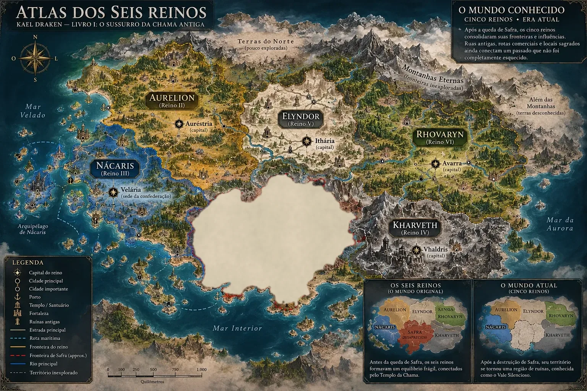

Mitologia e história antiga
Safra e a Noite das Cinzas
A ferida da história
Estabelecido
A vida de uma civilização ligada às chamas, a decisão dos cinco reinos, a catástrofe, a linhagem perdida, as ruínas e o apagamento.

Uma civilização viva
Safra era um dos seis reinos, e possuía uma ligação excepcional com as chamas. Era um povo com suas cidades, suas ruas, sua arquitetura e sua cultura — uma civilização que existiu de verdade.
Os detalhes de sua cultura, de suas cidades e de seus costumes ainda estão em desenvolvimento.
A decisão dos cinco reinos
Os outros cinco reinos decidiram destruir a população de Safra, movidos pela inveja de seu poder.
A Noite das Cinzas
Safra foi destruída. A catástrofe é lembrada como a Noite das Cinzas. Durante esse mesmo período, a Chama desapareceu.
Os detalhes definitivos da destruição não foram estabelecidos.
A linhagem perdida
Com Safra, perdeu-se a sua linhagem real.
As ruínas
Restaram ruínas. Sua localização e seu estado atual ainda não foram definidos.
O apagamento
Depois da destruição, Safra foi apagada da história oficial. A versão reconhecida pelos reinos admite apenas cinco — como mostra o mapa do mundo conhecido no Atlas.

O destino completo de Safra permanece um mistério preservado.